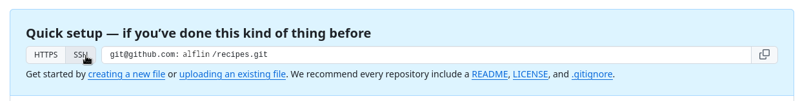
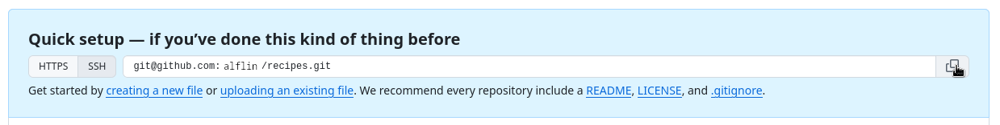

Remotes in GitGHub
04 March 2025
Objectives
- Learn what remote repositories are and why they are useful.
- Push to or pull from a remote repository.
Questions
- How do I share my changes with others on the web?

Hosting services
Many options
Let’s start by sharing the changes we’ve made to our current project with the world. To this end we are going to create a remote repository that will be linked to our local repository.

Creating a remote repository
Log in to GitHub, then click on the
icon in the top right corner to create a new repository called
recipes:

Name your repository “recipes” and then click “Create Repository”.
Note: Since this repository will be connected to a local repository, it needs to be empty. Leave “Initialize this repository with a README” unchecked, and keep “None” as options for both “Add .gitignore” and “Add a license.” See the “GitHub License and README files” exercise below for a full explanation of why the repository needs to be empty.

As soon as the repository is created, GitHub displays a page with a URL and some information on how to configure your local repository
Connect local repository to remote
Now we connect the two repositories. We do this by making the GitHub repository a remote for the local repository. The home page of the repository on GitHub includes the URL string we need to identify it:

Click on the ‘SSH’ link to change the protocol from HTTPS to SSH.

Establishing SSH connection (a bit hard)
We use SSH here because, while it requires some additional configuration, it is a security protocol widely used by many applications. The steps below describe SSH at a minimum level for GitHub.
Before we can connect to a remote repository, we need to set up a way for our computer to authenticate with GitHub so it knows it’s us trying to connect to our remote repository.
- We will use Secure Shell Protocol (SSH).

Secure Shell Protocol (SSH)
SSH uses what is called a key pair. This is two keys that work together to validate access. One key is publicly known and called the public key, and the other key called the private key is kept private. Very descriptive names.
- You can think of the public key as a padlock, and only you have the key (the private key) to open it. You use the public key where you want a secure method of communication, such as your GitHub account. You give this padlock, or public key, to GitHub and say “lock the communications to my account with this so that only computers that have my private key can unlock communications and send git commands as my GitHub account.”

Setting up SSH keys
This setup only needs to be done once, so if you already did it, you can relax :)
Keys are stores in a folder in your home directory called
.sshYou can see it by typing
$ ls -al ~/.ssh- You can create a new SSH key pair by typing
$ ssh-keygen -t ed25519 -C "a.linguini@ratatouille.fr"comment: -t option specifies which type of algorithm to
use and -C attaches a comment to the key

Test if it worked
$ ssh -T git@github.comHi Alfredo! You've successfully authenticated, but GitHub does not provide shell access.- If you changed the name of the filename for the
key, then you need to pass it to
sshcommand with the-iflag. For example,
ssh-keygen -t ed25519 -f test
ssh -i ~/.ssh/test git@github.com
Finally establishing SSH connection

Copy that URL from the browser, go into the local
recipes repository, and run this command:
$ git remote add origin git@github.com:alfin/recipes.gitComment: Use your username.

Finally, we are here

Continue with
Content

comments
If your operating system has a password manager configured,
git pushwill try to use it when it needs your username and password (default behavior for Git Bash on Windows). Possible to useunset SSH_ASKPASS.-uis synonymous with the--set-upstream-tooption for thegit branchcommand, and is used to associate the current branch with a remote branch so that thegit pullcommand can be used without any arguments.git push -u origin mainonce the remote has been set up.